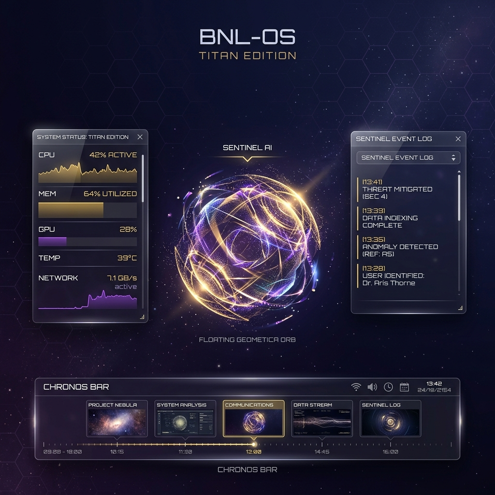

Welcome to the BNL Ecosystem. We are building a unified future where operating systems and educational platforms are driven by Agentic AI.
A custom Yocto-based Linux distribution where AI is the core, not an add-on. Featuring the Chronos Timeline and Sentinel Plane.
Learn More ↓An AI-powered security education platform with automated lab orchestration and built-in privacy protection.
Enter Branch →BNL-OS is built on the Yocto Project, but its soul lies in its AI layers. We've moved beyond the traditional desktop metaphor into a narrative, event-driven experience.
A deterministic rule engine paired with AI analyzers. Sentinel monitors kernel hooks via eBPF and ensures every action is safe before it happens. Rollback is just a Btrfs snapshot away.
Forget the file system. In BNL-OS, everything is an event. The Chronos Bar allows you to travel through the past (snapshots), manage the present (agents), and plan the future (intents).
A multi-agent system where specialized AI models negotiate resource allocation and task execution in the background, ensuring your system is always optimized without you lifting a finger.

Every decision in BNL-OS is made with constrained hardware and production reliability in mind.
Every layer, recipe, and BSP is version-controlled with BitBake. Fully reproducible builds across machines.
Minimal attack surface. No unnecessary daemons. Read-only rootfs with dm-verity integrity verification.
Optimized systemd unit ordering and suppressed unused services for sub-3-second boot on target hardware.
Dual-bank partition layout with atomic flipping. Failed updates automatically roll back to the previous good slot.
Target under 50 MB rootfs. Suitable for hardware with as little as 128 MB RAM.
Compose your image by including only the Yocto layers you need — networking, app runtime, BSP, and more.
BNL-OS is actively being built. Read the architecture docs or watch the changelog for updates.